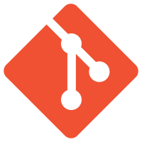

NOTE: "Git" is not the same as "GitHub"
Unlike TFS, Git does not show what files are currently edited on other user's machines. There is much more of a chance for what is called a "merge conflict" (Two or more simultaneous edits to the same file, which cannot both be pushed to the same repository)
Created by Linux developers (Initial Release in 2005)
According to Wikipedia, has an "emphasis on speed, data integrity, and support for distributed, non-linear workflows."
| TFS (From inside Visual Studio) | Git (Using command line interface) |
|---|---|
| "Get latest" | >$ git pull |
| "Check in Pending Changes" | >$ git commit -m "[Commit Message]"
>$ git push |
| "Undo Pending Changes" | >$ git add .
>$ git reset --hard |
| "Compare" | >$ git status |
| Feature | TFS | git |
|---|---|---|
| Save source code | Yes | Yes |
| Retain all version history | Yes | Yes |
| Group changes into sets | Yes (file level only) | Yes |
| Automatic change detection | in 2012 | Yes |
| Branch | Yes (not easy) | Yes (very easy) |
| Merge between related branches | Yes | Yes (very easy) |
| Safe merge between unrelated branches | No | Yes |
| Offline access to history | No | Yes |
| Offline commit | No | Yes |
| Offline commit | No | Yes |
| Sneaky automatic merges on the server | Yes | No |
| Enforce requirements before commit | Yes | No |
| Private local branches | No | Yes |
| Learning curve for users | Low | Medium |
| Learning curve for administrators | Very high | Medium-high |
| GUI support | Strong | Poor |
| Conditional commit (if tests work) | Yes | No |
| Save IDE state | Yes | No |
| Work item tracking | Yes | No |
| Automated builds and tests | Yes | No |
| Analytics and charting | Yes | No |
| Manual test tracking | Yes | No |
| Installation | 1/2 day | 10 minutes |
| Deployment, central and local | days to months | 1 day |
| Free online hosting | Yes | Yes |
| Cost | $$$ | free |
| Security | Yes | No |